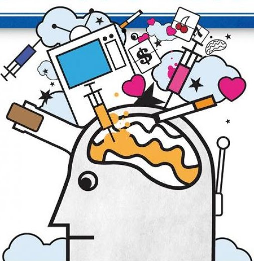

Para comenzar a entender este tema es importante definir que es una adiccion, para Echeburua y Requesens (2012) se define como: “una aficion patologica que genera dependencia y resta libertad al ser humano al estrechar su campo de conciencia y restringir la amplitud de sus intereses”

Podemos clasificar en dos
grupos a las adicciones:
Existen diversas acciones que pueden
ayudar a las personas a prevenir una
adiccion las cuales WILBUR E.
LUCAS ELEMENTARY (s.f) indica
que pueden ser:
Los adictos buscan la manera de
consumir a pesar de saber los riesgos
de sus impulsos. (Echeburua y
Requesens, 2012)
Es por ello por lo que es necesario
detectar si una persona se encuentra
en una adiccion, ya que su falta de
voluntad afecta de manera negativa su
bienestar.
Algunos aspectos que indican una
posible adiccion son:
Los seres cercanos como familia y amigos desarrollan un rol importante, ya que es a traves de estos que la persona puede entrar en conciencia de su estado o acercarse a pedir ayuda. (Centro Montau, 2020)
A pesar de que existen diversas
acciones para la prevencion de las
adicciones no todos los individuos las
conocen es por ello por lo que existen
diversos tratamientos.
Sin embargo, primero se debe
reconocer el problema, pedir ayuda a
profesionales, comunicar la situación
a las personas cercanas como
familiares y amigos, comprender que
hacerlo no es debilidad si no la
búsqueda de la mejora de la calidad
de vida, alejarse del entorno que
produce la adiccion, tener compromiso
y responsabilidad consigo mismo.
Esto da paso a las fases del
tratamiento general para superar la
adicción que son:
Cabe resaltar que hay otros tratamientos especificos que se acoplan al tipo de adiccion como el tratamiento psicológico y socio terapéutico, tratamiento farmacologico, tratamiento con neurociencia entre otros. (Centro de investigacion y tratamiento de adicciones, s.f)